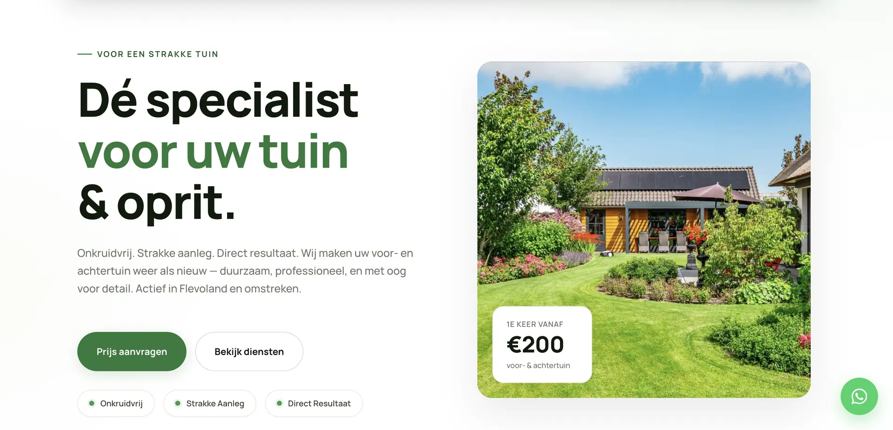
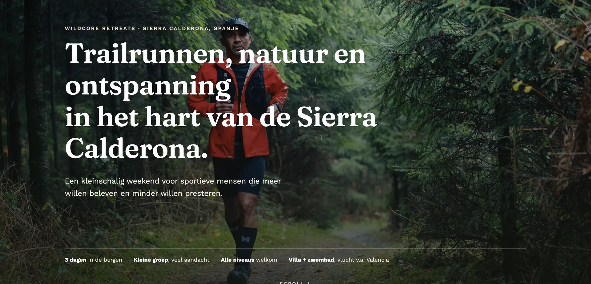
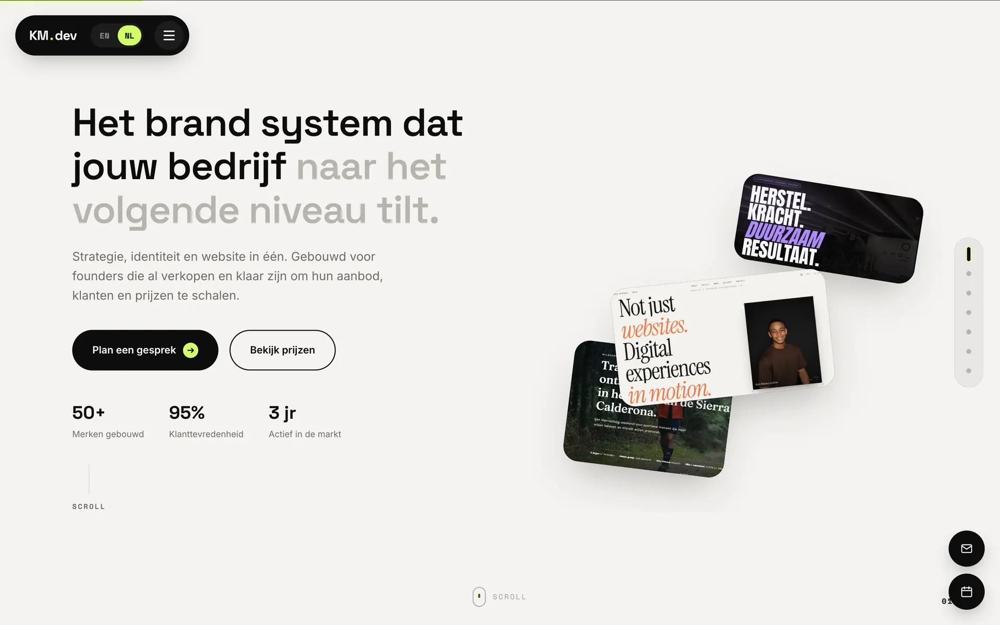
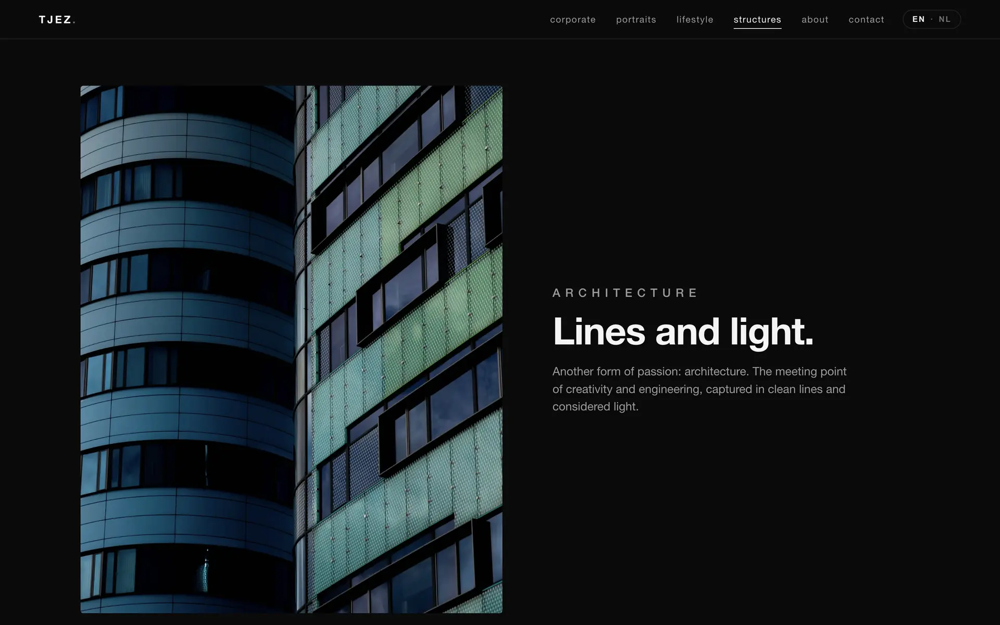
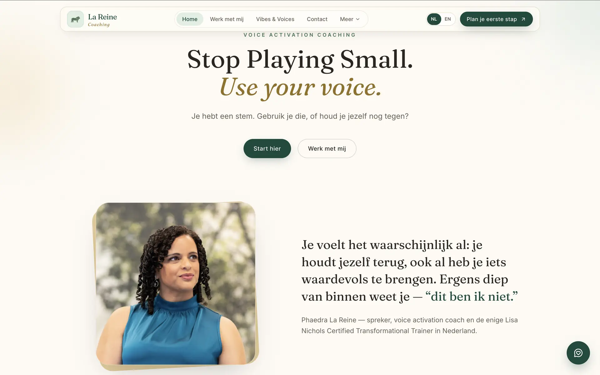

01
Design.
Interfaces shaped by cinema — pacing, lighting and atmosphere translated into layout, type and color.
I am Kain Mckancy La Reine, an enthusiastic and creative developer from the Netherlands. At 22 years old, I have a deep passion for design, coding, films and art. I love exploring creativity through immersive digital experiences, visual storytelling and modern aesthetics that blend technology with emotion.
Cinema plays a major role in the way I approach creativity. The atmosphere, pacing, lighting and emotional impact of films strongly influence the way I design interfaces and build interactive experiences. I am constantly inspired by fashion, architecture, music and different cultures, translating those inspirations into unique digital worlds.
I recently completed my studies at Bit Academy in Amsterdam, where I specialized in software development and evolved into a full stack developer. During this journey, I strengthened both my technical and creative skills, learning how to build modern, scalable and highly interactive digital experiences while continuously pushing myself to grow as a developer and designer.
Beyond development, I enjoy experimenting with motion design, cinematic interactions and futuristic web experiences. I spend much of my free time building websites, refining visual concepts and exploring new creative ideas that challenge the boundaries between design, motion and technology.
In 2026 I founded KM.dev, a small brand-system studio built on everything I learned shipping TuinToppersPro, Wildcore Retreats and TJEZ Photography — strategy, identity and a working website, delivered as one fixed-price system instead of three separate hand-offs.
It's the same instinct that runs through this whole portfolio: a brand should feel considered in every pixel, not assembled from a template. KM.dev is where I get to build that for other founders, from the first sketch to the site going live.
Visit KM.dev ↗Design, motion and code, handled end-to-end — with KM.dev I package it as one fixed-price system for founders who'd rather not juggle three different freelancers.
Interfaces shaped by cinema — pacing, lighting and atmosphere translated into layout, type and color.
GSAP-driven interaction that earns its place — every transition tells part of the story, nothing moves just to move.
Full-stack builds in React and TypeScript, shipped with modern tooling — fast, accessible and built to actually go live.
Strategy, identity and website as one package — through KM.dev, delivered fixed-price and production-ready.
Words that carry the same tone as the design — clear, confident, and written to actually convert.
From Figma file to live domain — SEO fundamentals, accessibility and performance baked in from day one.
Five projects shipped between 2024 and 2026 — one screen each, straight from the live domain.
Local business — Garden care
A garden-maintenance and pressure-washing brand in Flevoland. Fixed-price services, subscriptions and a before/after slider that sells the work at a glance.

Travel — Trailrun retreat
A trailrun & hike retreat brand in Spain’s Sierra Calderona. Editorial pacing, real route stats and a villa built around one idea: not performing — experiencing.

Brand system — My own studio
My own studio — strategy, identity and website delivered as one fixed-price system for founders ready to scale. Case studies for Wildcore, TuinToppersPro and this portfolio.

Photography — Portfolio
A portfolio for photographer Chesron Salakory — portraits, corporate, lifestyle and architecture. Built image-first on a near-black canvas, so the work does the talking.

Coaching — Voice activation
A warm, editorial site for voice-activation coach Phaedra La Reine. Serif display type, a soft cream canvas and one clear first step: “Plan je eerste stap”.

Every screen I shipped and every face behind it — drifting, tilting, alive.
Tell me about your project, your world, your idea. I respond to every message.